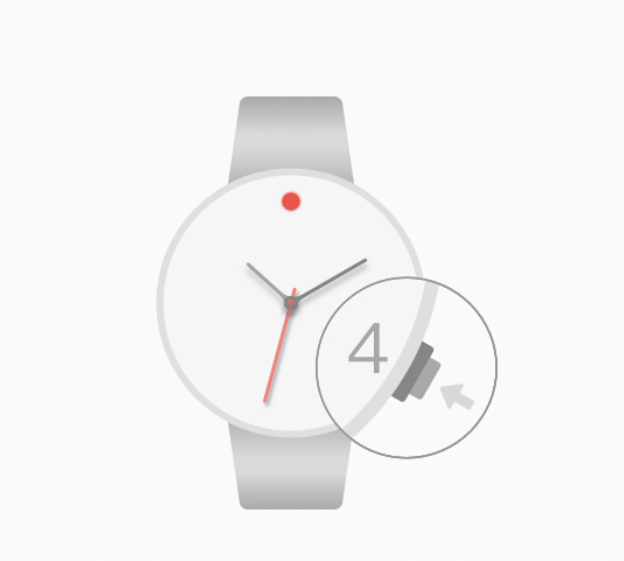
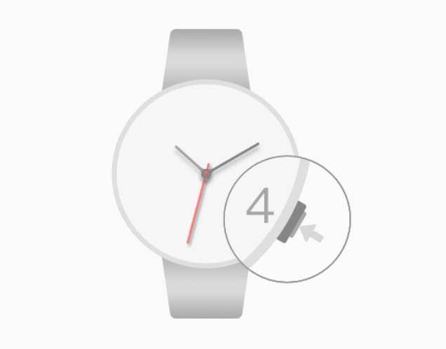
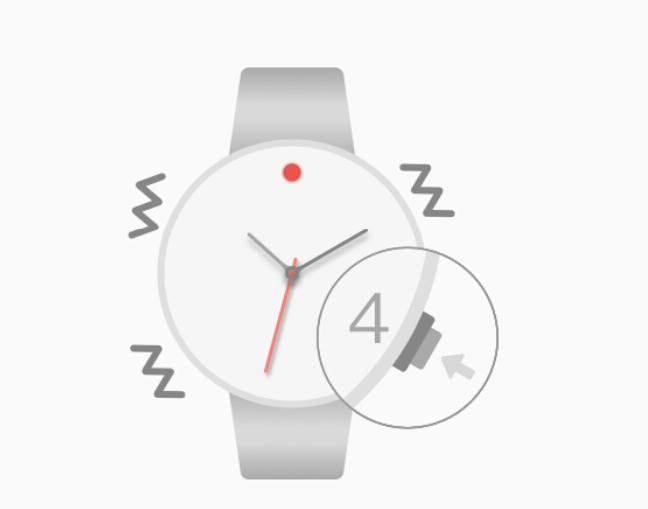
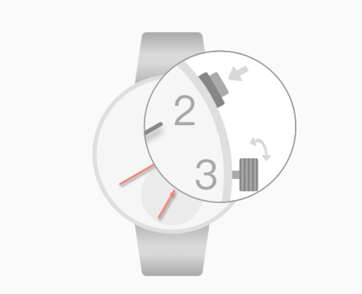

Xem trạng thái: quá trình bằng cách nhấn vào 4:00 trái phiếu có thể kiểm tra tình trạng kết nối Bluetooth, 12:00 nhấp nháy ánh sáng gấp đôi chỉ ra rằng chiếc đồng hồ không được kết nối với điện thoại; 12: khoảng 00 đèn nhấp nháy trong hai giây Mô tả đồng hồ với điện thoại của bạn được kết nối, nếu không đèn sáng không nhấp nháy cho biết Bluetooth không mở cửa

Bluetooth được bật: nút ở chế độ xem hoặc trong tình trạng khép kín, các phím bấm 04:00 2 giây Mở。

Ngắt kết nối: dưới tình trạng hồ và điện thoại kết nối, khi một cảnh báo cuộc gọi, bấm 4:00 trái phiếu có thể treo điện thoại lên。
Remote điều khiển camera: một trạng thái kết nối dưới điện thoại đồng hồ, các phím bấm 04:00 2 giây để vào chế độ chụp ảnh từ xa, máy ảnh và sau đó mở điện thoại, hãy bấm phím hoặc bit 04:00 camera kiểm soát Fanwan。

Tự động đồng bộ hóa thời gian điện thoại để xem, con trỏ đồng hồ được tìm thấy không chính xác, vương miện có thể được kéo ra, biến giờ điều chỉnh vương miện và kim phút; quay nhỏ như một chiếc đồng hồ, vương miện được kéo ra khỏi 2:00 phím quay số để kiểm soát nhỏ con trỏ xoay; những giờ, phút và gợi ý nhỏ trỏ đến sau 12:00, đẩy lùi các vương miện, con trỏ tự động bắt thời gian chính xác。
Câu Hỏi Thường Gặp：
●Sau khi điện thoại để thay đổi đồng hồ không tự động thay đổi thời gian. Ứng dụng điện thoại để foreground, chờ khoảng 10 giây。
●Apple điện thoại được kết nối, điều khiển từ xa đã không cảnh báo hay không để chụp ảnh. Hoặc Apple điện thoại không được ghép nối với Bluetooth. Mở chế độ máy bay điện thoại di động của bạn, khoảng 10 giây và sau đó đóng cửa. Reconnect vẫn tồn tại như đồng hồ, xem 4:00 phím bấm ít nhất 7 giây khởi động lại đồng hồ。
●Xem điện thoại Android được kết nối nhưng không ghép nối. Khởi động lại điện thoại tìm kiếm kết nối Bluetooth lại。
●Bạn không thể chụp ảnh trên điều khiển từ xa và xem điện thoại Android ghép nối. Nhập chi tiết thiết bị Bluetooth, hãy kiểm tra xem nếu thiết bị là một thiết bị đầu vào, chẳng hạn như kiểm tra, mở camera điện thoại, nút máy ảnh để thay đổi điện thoại hoặc bấm các phím âm lượng để điều khiển camera. (Một phần của mô hình Android không hỗ trợ thiết bị đầu vào.)
●Điện thoại Android đã thậm chí không xem một lời nhắc nhở. Kiểm tra các ứng dụng nhắc nhở cuộc gọi điện thoại, nhắc nhở switch nhắn được bật; thêm một chiếc điện thoại vào ứng dụng điện thoại sẽ tin tưởng danh sách (một phần của trợ lý bảo mật di động sẽ bảo vệ); kiểm tra thanh thông báo điện thoại để nhắc nhở công tắc được bật để các ứng dụng điện thoại。
●Bất thường khác, chẳng hạn như Bluetooth liên tục thắp sáng đèn hoặc nhấp nháy liên tục. Bấm đồng hồ 04:00 7 giây hoặc nhiều phím khởi động lại đồng hồ; xem hoạt động nắp mở là báo chí không hợp lệ vào nút reset。